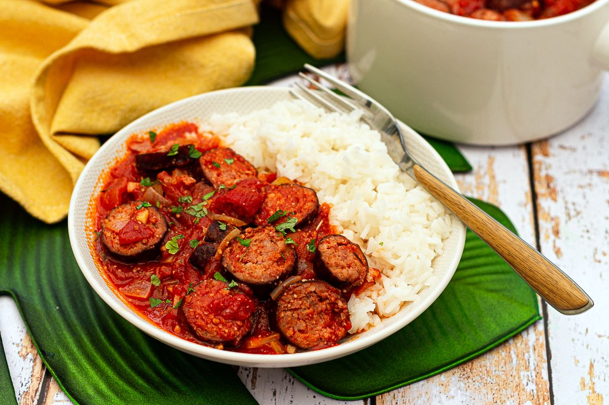

Le Rougail saucisse
Le rougail saucisse est sans conteste le roi absolu des tables réunionnaises. Des pique-niques dominicaux dans les Hauts aux grandes réceptions familiales, ce plat unique incarne à lui seul la convivialité, le partage et l'identité culinaire de l'île Intense.
Il se compose de saucisses de porc ou de volaille (fraîches ou fumées), découpées en morceaux puis rissolées, avant d'être longuement mijotées dans une sauce concentrée et piquante à base de tomates fraîches, d'oignons, d'ail et de gingembre.
L'histoire et le secret du Rougail Saucisse
Le mot « rougail » puise ses origines dans la langue tamoule (*ooroukay*), mais désigne à La Réunion un mode de préparation bien spécifique. Contrairement au cari, le rougail ne contient jamais de curcuma (le safran pays). Sa couleur rougeoyante et sa texture onctueuse proviennent exclusivement de la réduction lente des tomates mûres combinée aux oignons fondants.
La préparation traditionnelle exige une sélection rigoureuse de saucisses locales, de préférence mi-sèches ou fumées au bois de filao. Le rituel commence toujours par le dessalage : les saucisses entières sont piquées à la fourchette puis bouillies une à deux fois dans une marmite en fonte pour en extraire l'excès de sel et de graisse avant d'être coupées en tronçons et dorées.
Le secret des cuisiniers péi réside dans l'art d'ajouter les épices au bon moment. Après avoir fait rissoler les oignons, l'ail et le gingembre pilés avec du piment oiseau, on incorpore les tomates concassées. Il faut ensuite laisser réduire à feu doux et à couvert : les tomates doivent complètement fondre et former une sauce très épaisse qui nappe littéralement la viande.
Un rougail saucisse digne de ce nom est traditionnellement servi sur un lit de riz blanc bien chaud, recouvert de "grains" (généralement des lentilles de Cilaos ou des haricots rouges de l'île) et escorté d'un condiment frais comme un rougail mangue ou un rougail dakatine.